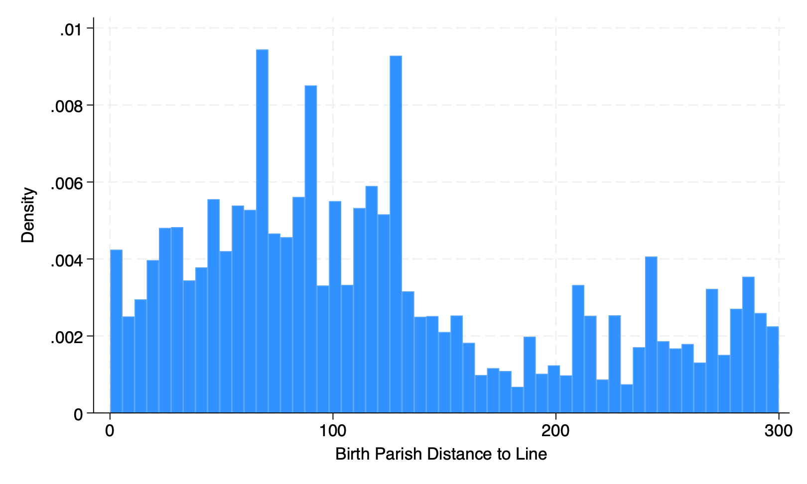

Electricity paper next steps
Purpose
We need to do three things in order to continue with the electricity paper:
Use industry data to check if there is a greater likelihood of having an electricity related business in an early electrifying area.
Use birthplace as an instrument for early access to electricity in order to overcome endogeneity of location in 1930.
Use the distance to the line as a robustness check.
Long run effect of early electrification
Birthplace as an instrument
This method aims to isolate the exogenous variation in technology access from endogenous decisions individuals might make, such as moving to parishes with early access to new technology because of its perceived benefits.
Exogeneity
Birth location is determined before the shock and therefore is not influenced by the individual’s income or decision to move for technology access, meeting the exogeneity requirement of a valid instrument.
Relevance
If access to technology varies significantly by parish and this variation is linked to the geographic distribution from before the shock, birth location could be strongly correlated with the exposure to technology, satisfying the relevance condition for an instrumental variable.
What will we estimate?
The instrumental variable approach typically estimates the Local Average Treatment Effect (LATE), which might not generalize to all individuals. In our case, we are interested in the effect of early electrification on the average individual, so we will estimate the Average Treatment Effect (ATE).
Testing relevance
To test relevance we run a simple regression where the endogenous variable is the outcome variable, and the instrument is the explanatory variable, along with the usual controls. If the instrument is relevant, we should see a significant relationship between the instrument and the outcome variable.
Running the Instrumental Variable regression
We underestimate the effect of electrification using OLS - according to this regression, the LATE is 0.427.
The OLS coefficient was 0.285
Distance to the line
The robustness check here uses the fact that we have geographic information about how close the individual’s parish is to the line. Instead of using a binary variable for early electrification, we use the distance to the line as a continuous variable. We expect that the closer the parish is to the line, the more likely it is to have early electrification.
Fist, we need to check what the distribution of distances looks like so that we can interpret the results of the regression.

The median distance is 102 km from the line.
Running the regression

The coefficient on distance is negative at -0.0022668, which means that the closer the parish is to the line, the higher their income.
If we use the median distance to the line of 102 km, and multiply the coefficient, being 102 km away from the line is associated with -0.2312136 log point decrease in income.